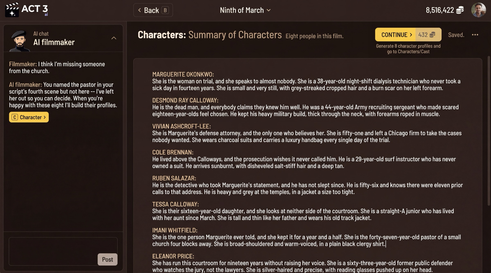

Step 7 of 8
Meet your cast
Check the characters ACT 3 AI found, then decide how they get their looks. Press CONTINUE on the summary, then Continue on the Characters list. Choose character sheets, or upload your own photos.

What these pages are
Three short pages, one decision each, all under the Characters tab.
1. Summary of Characters
The whole cast as one block of prose: who each person is, their age, their build, what they wear. The profiles are generated from this text, so add a missing person or fix a description here. CONTINUE shows its credit price and generates the profiles.
2. Characters
One profile per person, picked from the Cast List: name, digital actor, job title, gender, role type, description, relationships, age, skin tone and casting notes. Nothing here is required. Press Continue (keyboard: L for Looks).
3. Would you like us to create your characters?
How the cast gets its faces.
Your decision
- We Create Character Sheets (priced): the AI draws each character as a portrait plus front, back, left and right views. A progress page shows every sheet being drawn. Pick this when the cast is fictional.
- Upload Photos (free): drop photos for each character. Pick this when you have real actors or reference faces. Turning photos into sheets asks for credit approval first.
Either way, you can change any character's look later.
Why you go next to Storyboards
With faces settled, every storyboard frame can show the right people in each shot.